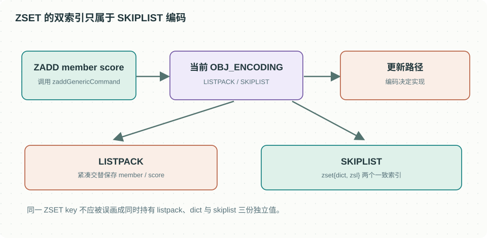
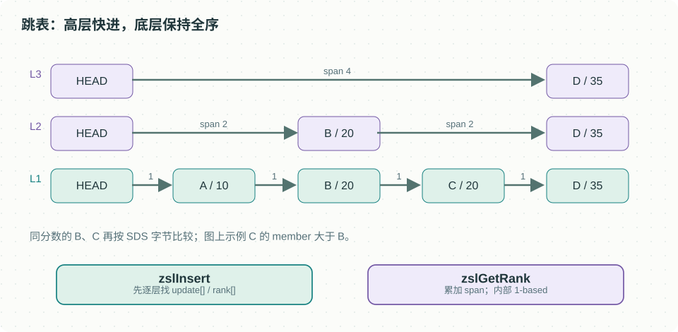
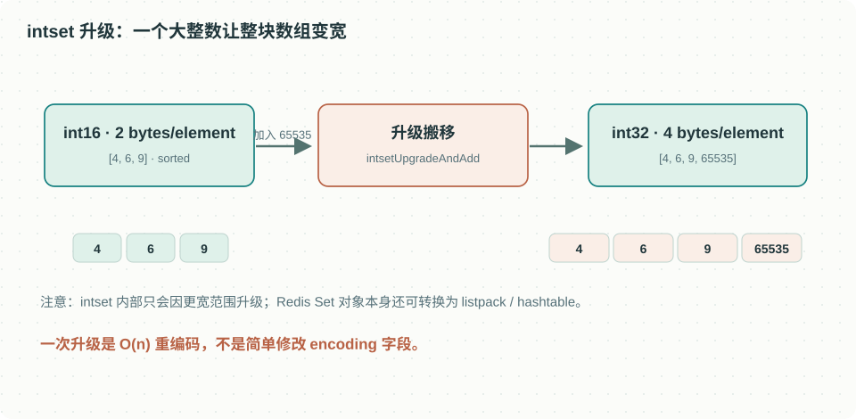

Chapter 07 · Redis 7.2.4 Source Anatomy
跳表、整数集合与有序查询：用空间换秩与范围
从 ZRANK 的 0-based 输出追进 span 的 1-based 内部秩，同时解释 zset 双索引与 intset 宽度升级。
为什么 ZRANK 不能靠一个普通哈希表？
一个游戏排行榜要回答 ZSCORE leaderboard Alice，也要回答 ZRANGE leaderboard 0 9 WITHSCORES。哈希表适合通过成员名找到分数，但若只有哈希表，取“第 1 到第 10 名”仍要排序。按分数有序的数据结构却容易进行范围访问。Redis 在较大 ZSET 的 SKIPLIST 编码下，使用两套互相对应的索引：哈希字典按成员定位得分，跳表按排序规则定位顺序。
“有一个 ZSET 就一定有字典和跳表”同样不正确：小型有序集合可能直接采用紧凑的 listpack 编码。先看 OBJECT ENCODING 再决定应该深入哪个实现分支。

跳表索引：每个节点拥有随机高度
跳表在最下层保持全体节点的有序链表，上层只“抽样”一部分节点形成快捷路径。查询从最高层向右走到不会越过目标的位置，再下降一级继续。插入时还要记录每层最后一个前驱节点 update[i]，以便连接新节点。
Redis 7.2.4 的随机高度由 zslRandomLevel 产生：每次以 ZSKIPLIST_P=0.25 的阈值尝试再升一层，最高 ZSKIPLIST_MAXLEVEL=32。因此低层大多数节点存在，高层节点稀疏；高度是随机结果而非根据成员名/分数计算出来的。
该概率关系仅描述独立随机层高的理论分布；真实节点数有限、存在 32 层上限，图中的每个节点高度也只是一个可理解的示例。搜索和插入的预期复杂度接近 O(log n)，最坏情况下仍可能退化。

span 的含义：不是“指针跨过几个字节”
Redis 通过每层连接的 span 记录沿底层顺序跨越的节点数。插入时，zslInsert 在查找路径上累加 rank[i]，随后按新节点所在位置拆分 span；删除则要合并、减少对应跨距。zslGetRank 以这些跨距累加出排名，所以跳表不必从头遍历到目标节点才能知道它的秩。
一个重要的“+1”问题：zslGetRank() 返回的是内部从 1 开始的排名，找不到成员返回 0；Redis 的用户命令 ZRANK 展示的是从 0 开始的下标。把二者原样等同会造成 off-by-one 的源码分析错误。
/* Redis 7.2.4 zslInsert() 的核心比较条件，节选重排 */
while (x->level[i].forward &&
(x->level[i].forward->score < score ||
(x->level[i].forward->score == score &&
sdscmp(x->level[i].forward->ele, ele) < 0)))
{
rank[i] += x->level[i].span;
x = x->level[i].forward;
}
update[i] = x;从比较条件看，排序先比较 double score，分数相同时再按成员 sds 的字节序比较。字典按成员做快速定位，这也是 zslInsert 注释要求调用方保证同一成员不会被重复插入的原因。
ZADD 的两种路径：紧凑表示与双索引
src/t_zset.c 中的 zaddGenericCommand 检查键、成员、分数以及 NX/XX/GT/LT 等标志；底层 zsetAdd 按当前编码选择更新方式。紧凑对象可以操作 listpack；对 OBJ_ENCODING_SKIPLIST，成员字典持有分数指针，跳表节点保存同一分数与成员。两者是协调维护的一份逻辑集合，而不是完全独立的两个成员拷贝。
转换需要同时保持数值、排序与成员唯一性，不要宣称只改 encoding 一个比特就完成迁移。内存阈值 zset-max-listpack-entries、zset-max-listpack-value 等条件影响何时从紧凑表示切换。
./src/redis-cli -p 6390 ZADD ranks 10 alice 20 bob 20 carol 35 dave
./src/redis-cli -p 6390 ZRANGE ranks 0 -1 WITHSCORES
./src/redis-cli -p 6390 ZRANK ranks alice
./src/redis-cli -p 6390 ZRANK ranks bob
./src/redis-cli -p 6390 OBJECT ENCODING ranks新键通常很小，可看到 listpack；如果调整阈值使它转为 skiplist，ZRANGE 的逻辑结果仍应不变。这正是对象编码透明性的核心。
intset 的升级为何可能触发整块重写？
Set 类型中的纯整数成员可以通过 intset 以有序、无重复的连续数组表示。编码宽度可能是 16、32 或 64 位整数。小范围数值上使用更窄的整数可以节约内存；加入一个更大或更小到超出范围的新数时，intsetUpgradeAndAdd() 必须重新分配并移动现有元素，把整块内容改写成更宽的编码。

intsetSearch() 对已排序数组进行二分查找，定位复杂度 O(log n)，但插入需要移动元素，不能据此声称 intset 的每次添加都是 O(log n)。它的编码宽度不会因为删除一个大数就自动下降；但 Redis 的 Set 对象能基于成员类型和阈值在 intset、listpack、hashtable 等编码间转换。
| 层级 | 什么会变化 | 转换代价 |
|---|---|---|
| intset 自身 | INT16 → INT32 → INT64 | 升级重写旧整数数组 O(n) |
| Set 对象 | intset → listpack 或 hashtable 等 | 转换旧成员、重建编码通常 O(n) |
| ZSET 对象 | listpack → skiplist/dict | 排序与字典索引协同构建，通常高于 O(1) |
三个短实验：排序、宽度升级、编码变化
下面命令需在第 02 章的本地临时实例中执行；避免把演示的 key 名用于共享或生产 Redis。
# 使用 Redis 7.2.4，本地测试实例端口 6390
./src/redis-cli -p 6390 DEL ranks numbers names
./src/redis-cli -p 6390 ZADD ranks 1 a 1 b 2 c
./src/redis-cli -p 6390 ZRANGE ranks 0 -1 WITHSCORES
./src/redis-cli -p 6390 ZRANK ranks a
./src/redis-cli -p 6390 SADD numbers 4 6 9
./src/redis-cli -p 6390 OBJECT ENCODING numbers
./src/redis-cli -p 6390 SADD numbers 65535
./src/redis-cli -p 6390 SADD names apple banana
./src/redis-cli -p 6390 OBJECT ENCODING names
./src/redis-cli -p 6390 SADD numbers not-a-number
./src/redis-cli -p 6390 OBJECT ENCODING numbers预期 ZRANK ranks a 为 0。加入 65535 仍可能使 Set 对象编码为 intset，因为它只提升了内部整数字节宽度；加入 not-a-number 后不再适用于 intset，7.2.4 的 Set 可能选择 listpack（不超阈值时），而非必须直接变成哈希表。以上编码结果取决于配置和键大小。
数据结构的界线：确定性逻辑与概率性结构
跳表层高随机，不意味着排序结果随机。插入路径必须同时维护 span、backward、tail 与字典索引；ZRANK 公开的是确定性排名。intset 的低内存开销来自强前提：成员能被解析为整数，且总体规模合适。跨出此前提时，切换表示的成本不可能凭空消失。
本章最后应建立两个判断：先用 OBJECT ENCODING 确定当前 ZSET/Set 的存储编码，再沿其源码路径分析复杂度。不要看到 ZADD 就断言必定进入跳表，也不要见到 SADD 就断言必定使用哈希表。
固定版本参考
源码锚定 Redis 7.2.4。随版本与配置变化的行为必须用对应二进制单独验证；下文的教学图不等于所有异常路径的完整调用图。